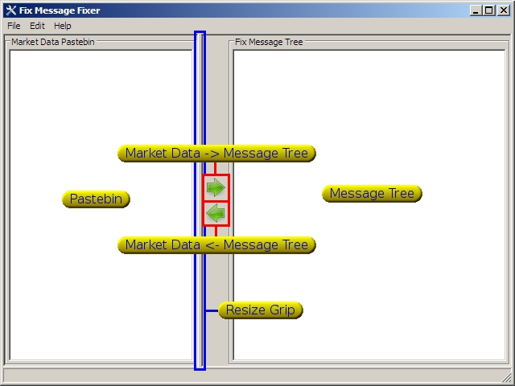

FIX-fixer can take any
standard FIX protocol message and convert it to an easy to read tree
format. The tree can then be edited and reformatted back to an pastable
message for copying into any test.

File:
The file menu contains
three items:
- Load: load a presaved message into the paste bin
- Save: save the current paste bin into a file
- Wizard: Launches the message creator
- Exit: Launches the space shuttle into orbit
Edit:
The edit menu contains the following items:
- Undo: Reverses the last performed action
- Redo: Redo the last undone action
- Clear: clears the paste bin and the message tree
- Preferences: currently brings up the default tags dialog
Help:
The help menu contains the following items:
- Help: You're here right? Looking at the help file
- About: What's it all about, developers, version, writers
Paste
Bin
The paste bin is the text box on the
left hand side of the window. It is used to copy data into and out of
the program. It can also be used to edit the message.
While the paste bin displays the SOH characters as '|', copying and
pasting still works as expected, copying the SOH characters into the
clipboard.
Message Tree
The message tree is the easy to read version of the message data in the
paste bin. Items can be added or removed by right clicking on the tree.
The tags can be edited by either selecting the item and selecting again
(two single clicks) or right clicking and selecting edit. Repeating
groups can be added by dragging an item and selecting 'Add as child' or by
selecting the item and pressing ctrl+t.
Clicking the sort message button (right arrow) while there is a message
in the paste bin will cause the current tree to be cleared and the
message
in the bin to sorted into a new tree. Clicking the create message
button (left arrow) will clear the paste bin and create a new message
using the data in the message tree. Tags can be dragged and dropped to
any location in the tree. A few of the tags (555, 146, 278) are
recognized as being starting tags for repeating groups and will indent
the tree appropriately.
Message Wizard
The message wizard steps you through a few steps in creating a few of the more common message types:
- Incremental Refresh (bid/offer/trade)
- Security definition lists (35=y/f/d)
Preferences/Default Tags
Currently preferences only brings up a dialog box that will show you
the current default tags that can be used in place of other tags show
in the message tree.
Other stuff to add